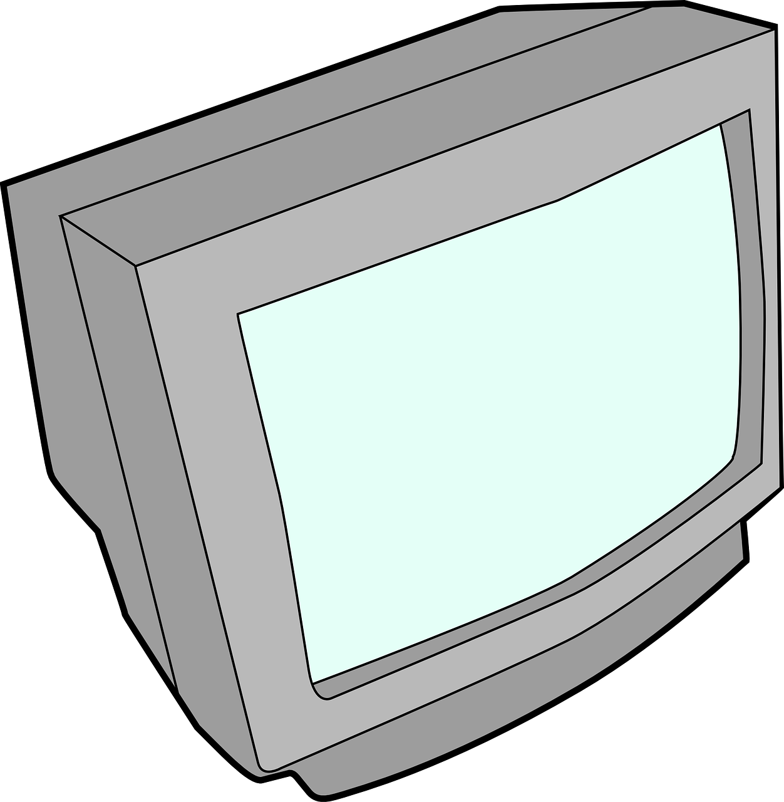
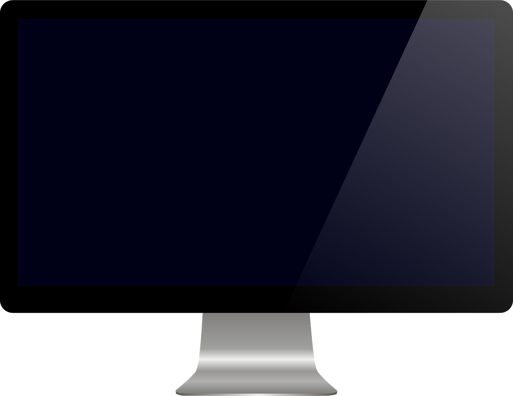
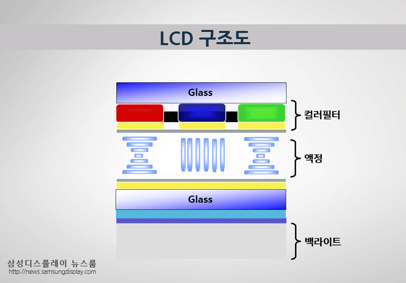

투명한 전극이 부착된 얇은 유리관 사이에 액정 물질을 넣고 전기를 흐르게 하면 액정 분자의 배열이 바뀌면서 빛의 강약을 조절하는 기술로 1974년, 액정은 전자손목시계에 사용되며 실용화된다. 1988년엔 14인치 액정 컬러 TV가 개발되었다. 이후 디스플레이 분야에서 액정은 독보적인 기술로 이름을 떨친다. 모니터, TV, 휴대전화에 이르기까지 IT 기술과 결합되어 더욱 보기 좋은 화면을 구현할 수 있게 되었다.
CRT (Cathode-Ray Tube: 브라운관)는 19세기 말에 처음 발명된 이후, 100년 넘게 TV나 컴퓨터 모니터와 같은 디스플레이 장치에 널리 쓰였다.
하지만 CRT는 전자총에서 음극 전자를 발사해 형광물질이 칠해진 유리면을 때리면 빛이 나는 원리를 이용한다는 구조적인 특성 때문에 장치의 부피를 줄이기 어렵다는 단점이 있다.
특히 화면 크기가 30인치 정도를 넘어가면 제품의 두께가 50cm에 달할 정도로 커지기 때문에 제품의 이동이나 배치에 어려움이 많았다.

2000년대 들어 기존의 CRT 디스플레이를 대신하는 ‘평판 디스플레이’가 본격적으로 대중화되기 시작해 TV 및 모니터 시장을 크게 바꿔놓았다.
평판 디스플레이는 벽걸이로 써도 될 정도로 두께가 얇은 것이 특징인데, 특히 평판 디스플레이 방식의 주역으로 떠오른 것이 바로 ‘LCD(Liquid Crystal Display: 액정 디스플레이)’다.
LCD는 화면이 30인치 이상으로 커져도 10cm 이내로 제품 두께를 줄일 수 있는 것이 가장 큰 장점으로, CRT에 비해 제품 소형화에 절대적으로 유리하다는 이점을 앞세워 시계나 전자계산기, 휴대전화 등의 소형 기기에도 대거 채용되어 정보 통신 환경 전반의 모습을 바꾸는 데 큰 기여를 했다.

LCD는 정보를 표현하기 위해 외부의 빛을 필요로 하는 디스플레이다. 액정 자체가 빛을 뿜어내지는 않기 때문이다. 따라서 패널 뒷면에서 백색의 빛을 비추는 백라이트(Back Light)의 도움을 받아야 하고, 다양한 색을 표현하기 위해 컬러필터(Color Filter)를 함께 사용해야 한다.

밝고 선명한 화면
높은 해상도와 명암비
좁은 시야각
잔상